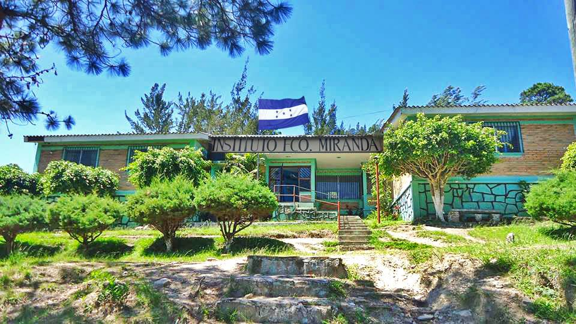
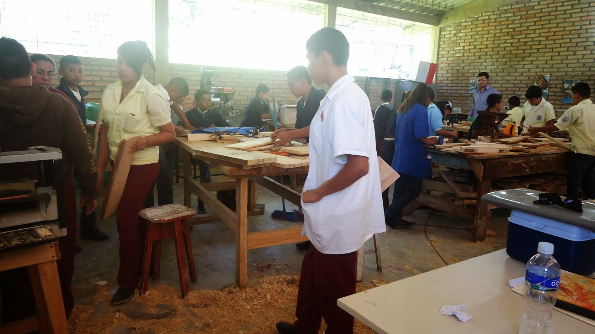

El Instituto Técnico “Francisco Miranda”, con una larga y brillante trayectoria de ejecuciones en pro de la juventud hondureña, a través de más de 20 años de existencia constituye el principal establecimiento de educación media en la comunidad de Zambrano. Nace a la vida institucional, a través del acuerdo 7245 EP-87 del 30 de Octubre de 1987; Inició como Institución privada y a partir de 1995 es de carácter oficial. Fueron sus fundadores: Don German Martínez, Don Felicito Vargas, PM Ramón Alexis Hernández, Profa. Elba Marina Urraco, Doña Elena Maradiaga y la Profa. Hilda Miranda; teniendo como cercanos colaboradores a Doña Azucena Vda. De Romero y Don Ramón Flores. Desde sus inicios hasta el año 1996 ofreció solamente ciclo común de cultura general, a partir de 1997 se ofrece la carrera de Educación Comercial; desde el año 2007 se cambia de modalidad y se ofrece el ciclo básico técnico con cuatro talleres: Agropecuaria, Madera, Hogar y Estructuras Metálicas y se brinda el Bachillerato Técnico en Computación a partir del año 2009.
RegresarEl Instituto Técnico Gubernamental Francisco Miranda, ubicado en Zambrano, Francisco Morazán, tiene por misión formar profesionales técnicos de excelencia, con competencias teórico-prácticas sólidas, integridad y compromiso social, preparados para contribuir al desarrollo técnico y productivo.
Ser un centro educativo técnico líder en la región, reconocido por su excelencia académica, innovación tecnológica y formación integral, que prepare a sus estudiantes para enfrentar los retos del mundo laboral y contribuir al desarrollo sostenible de nuestra comunidad.
Responsabilidad
Compromiso
Respeto
Disciplina
Innovación
Trabajo en equipo
Ética profesional
Excelencia educativa

Director

Sub-director